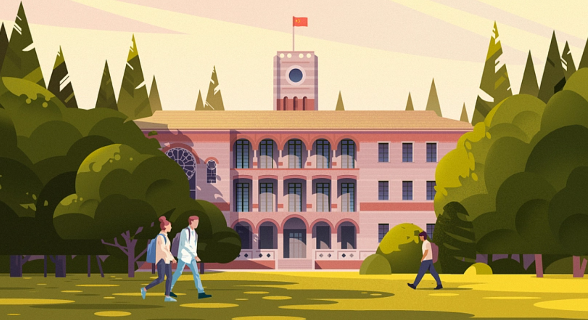
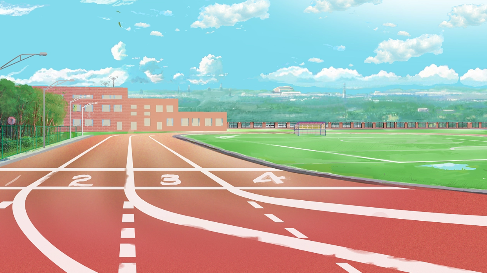
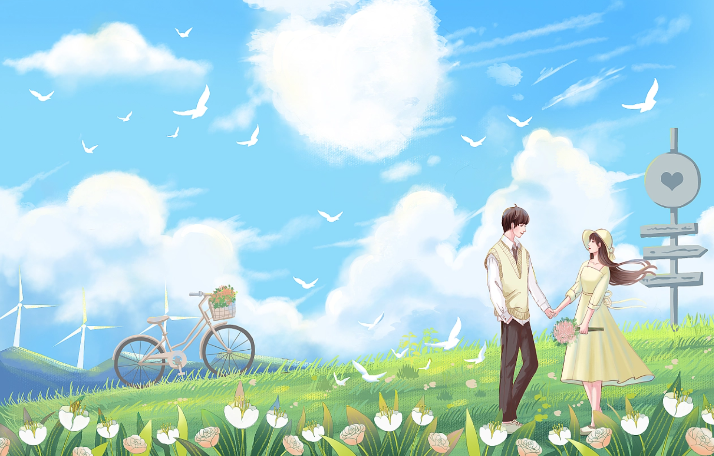
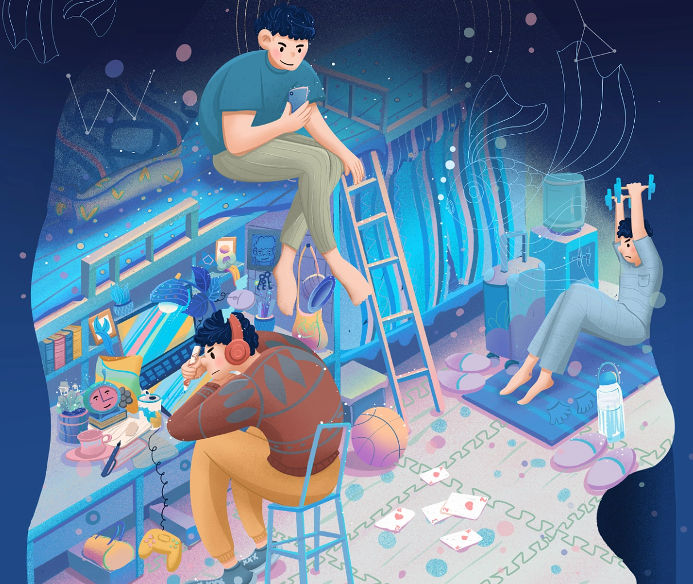
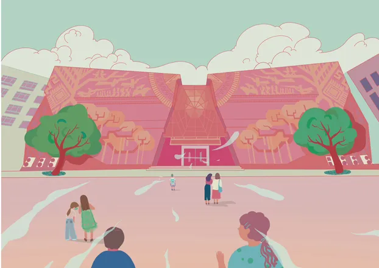
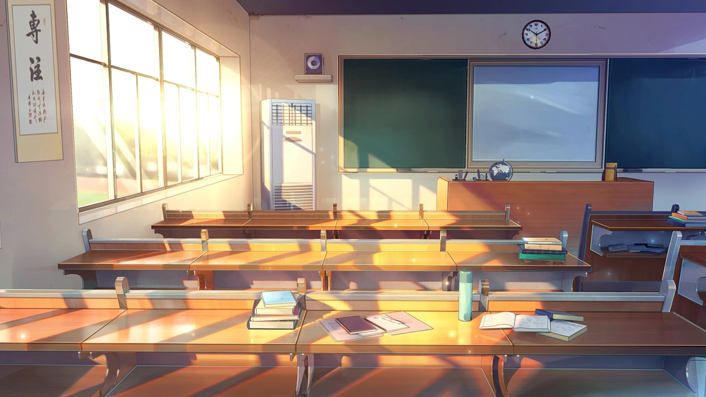
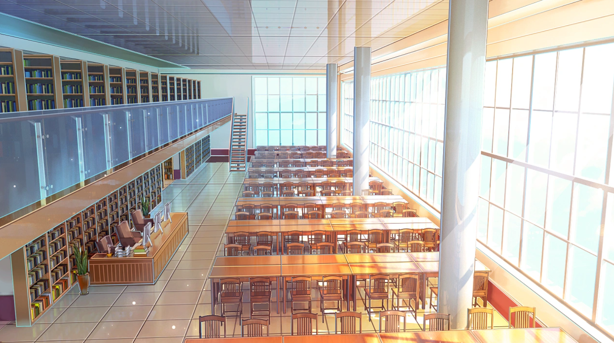
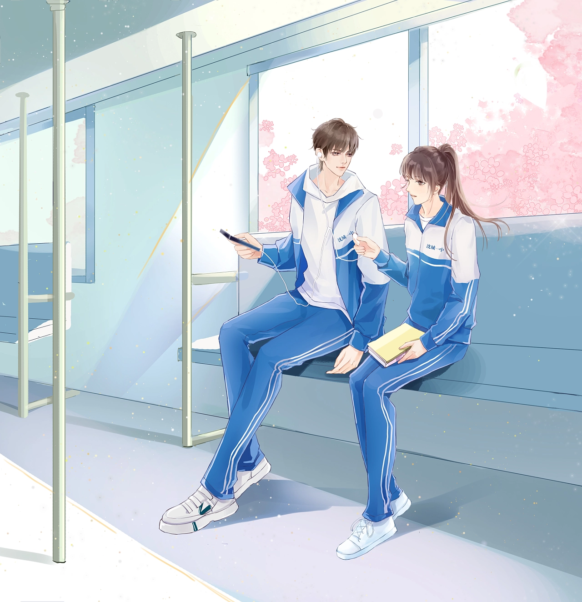
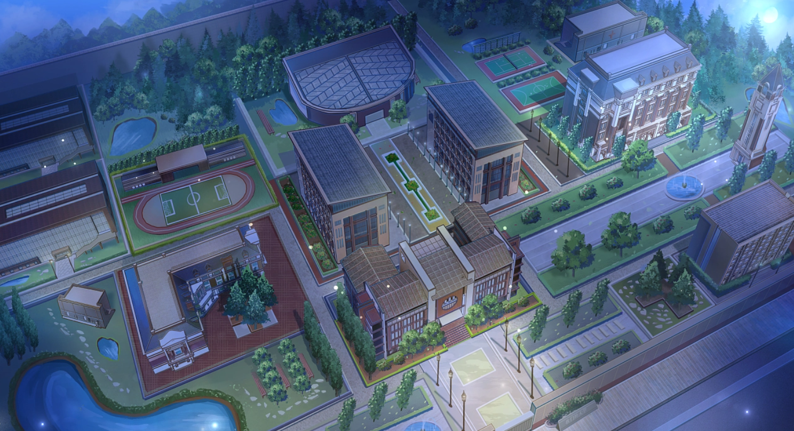

- 我
- 要
- 进
- 工
- 作
- 室
- 前
- 端
右键换肤

教学楼是我们每天必去取经之地

每天一到饭点都要在食堂里面纠结到底吃什么

午饭后躺在草坪上晒晒太阳欣赏学校的美景

忙碌又充实的一天结束爬上心爱的小床和室友聊聊天

天空还是一片浅蓝,转眼间东方出现了一道红霞,红霞慢慢地在扩大，不大一会就染红了小半边天。颜色红得可爱， 又
过了一会儿,在那个地方出现了太阳的小半边脸。美好的一天开始了
当清晨的阳光洒进我们宿舍，闹钟开始响起，忙碌的一天又开始了，每个人睡眼惺忪，从床上爬起，忙忙碌碌的穿梭在食堂与教室之间，充满了青春的气息


每当放学铃声响起，男同学们瞬间以百米冲刺的速度奔向食堂，当我们拖着咕咕叫的肚子到食堂的时候已经人山人海了，从每个浏览一遍，默默的排起了长队加入吃饭大军。
温暖的阳光照耀着大地，远处的小山都金灿灿的美轮美奂，它穿梭于微隙的气息。舒倘，漫长。紫檀的香味，弥漫在春日，把天地间一切空虚盈满，阳光下，是一道纤绝的尘陌，呢喃着天真，充盈着那抹曾经深不可测的孤清而飘逸的影。


当晚自习结束后，抬头望向天空，几颗大而亮的星星挂在夜空，仿佛是天上的人儿提着灯笼在巡视那浩瀚的太空。美丽极了，裹紧衣裳，在这优美的夜色中慢慢的走回宿舍。
夜空挂满了星星一闪一闪，银白色的月光洒在地上，到处都有蟋蟀的叫声。夜的香气弥漫在空中，织成了一个柔软的网，把所有的景物都罩在里面。眼睛接触到的都是罩上这个柔软的网的东西，任是一草一木，都不像在白天里那样现实了，它们都有着模糊、空幻的色彩，每一样都隐藏了它的细致之点，都保守着它的秘密，如梦如幻。
